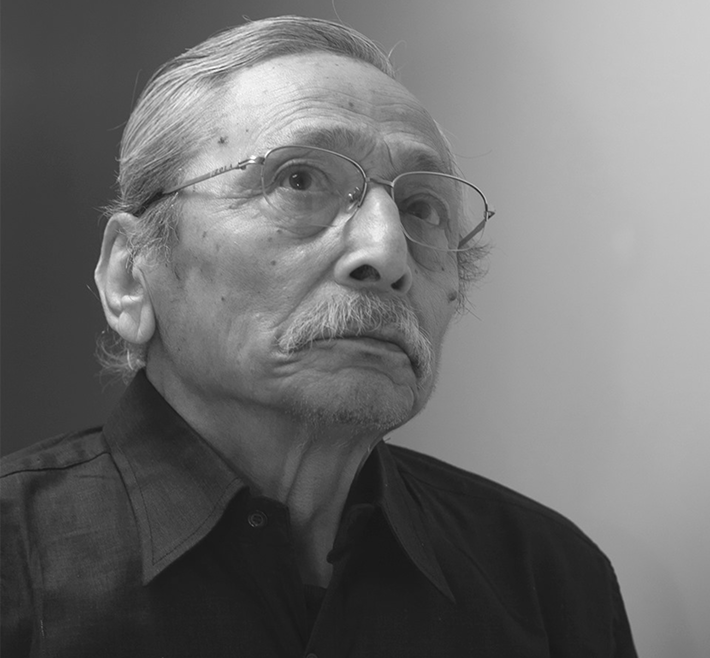

About Qala Art Gallery
Qala is devoted to the
spirit of Nepali culture and community. Founded in
2012 in Maitidevi, Kathmandu, Qala was envisioned as a space where art
could
hold memory, ask questions, and build connections across
time, disciplines, and generations.
We celebrate art that carries memory, movement, and meaning. Our focus
is on work rooted in tradition yet alive with the present. At Qala,
each exhibition is a conversation between the past and the possible,
showcasing artists who reflect the richness of Nepal's visual language
and the complexities of its changing identity.
Our programming spans exhibitions, workshops, and residencies that
bring together emerging and established voices. We collaborate with
artists, researchers, and cultural workers whose practices explore
heritage, ecology, social change, and lived experience. From quiet
drawings to large-scale installations, every project is approached
with care and curiosity.
Qala is more than a gallery. It is a gathering space for
dialogue, reflection, and community. Here, art is not
separate from life. It is a part of how we
remember, resist, imagine, and create together.

Founder's Vision
"I grew up surrounded by art, not always in galleries or textbooks,
but in the colors of rituals, the carvings on old windows, the
rhythm of everyday life in Kathmandu. Over time, I began to see how
art isn't just something we look at;
it's something we live. It holds our history, our
beliefs, our questions.
This gallery is my attempt to create a space where all of that can
come together. A place where the quiet grace of traditional forms
meets the bold restlessness of contemporary voices.
In a world that often feels rushed and repetitive, I wanted to build
a home for expression that's honest, reflective, and
unapologetically human"
— Uttam Nepali